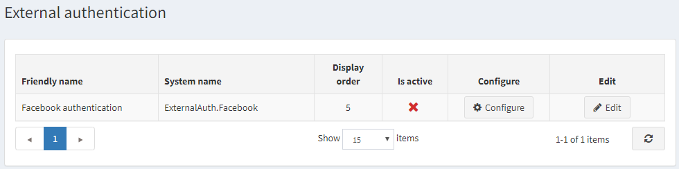
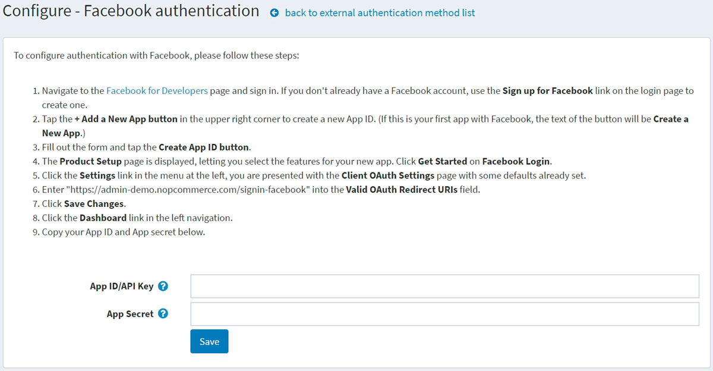

External authentication methods
External authentication methods allow users to log in to a nopCommerce site without entering their credentials: email and password. Users can be authenticated using an external site (such as Facebook or Google). nopCommerce has a built-in external authentication through Facebook. You can set up other methods using plugins from the marketplace.
After an external authentication method is configured and marked as active, users will see a new authentication option on the login page.
Manage the external authentication methods
Go to Configuration → Authentication → External authentication. The External authentication window will be displayed:

Click Edit beside an authentication method and select Is active to activate the method. You can also define the method's Display order. Then click the Update button to save the changes.
Click Configure for the method configuration.
Manage Facebook authentication
The Facebook authentication method is a built-in external authentication plugin. To configure authentication with Facebook, please follow these steps:
On the Configuration → Authentication → External authentication page, click Configure beside the Facebook authentication. The Configure - Facebook authentication window will be displayed:

Navigate to the Facebook for Developers page and sign in. If you have no Facebook account, use the Sign up for Facebook link on the login page to create one.
Tap the + Add a New App button in the upper right corner to create a new App ID. (If this is your first app with Facebook, the text of the button will be Create a New App.)
Fill in the form and tap the Create App ID button.
The Product Setup page will be displayed, letting you select the features for your new app. Click Get Started on Facebook Login.
Click the Settings link in the menu on the left; you will be presented with the Client OAuth Settings page with some defaults already set.
Enter
https://yoursitename.com/signin-facebookinto the Valid OAuth Redirect URIs field, replacingyoursitename.comwith your site URL.Click Save Changes.
Click the Dashboard link in the left navigation.
Copy your App ID/API Key and App secret in the form on the plugin configuration page.
Click the Save button. On the login page of the public store, see the newly added authentication method.